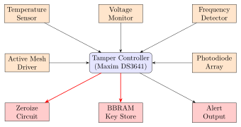
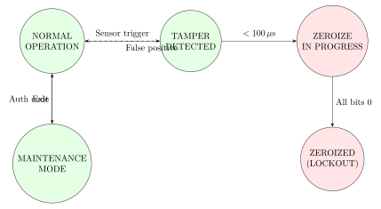

Chapter 13: Anti-Tamper Technologies¶
Note: Physical security of hardware is the last line of defense against an adversary with hands-on access. Anti-tamper technologies span active mesh sensors, environmental detectors, secure key storage with zeroization, TEMPEST emission controls, and supply chain integrity mechanisms. This chapter covers: the complete anti-tamper threat model; PCI PTS HSM requirements; active and passive tamper detection; BBRAM and eFUSE secure key storage; TEMPEST/EMSEC standards (NSTISSAM, NATO SDIP-27); potting and encapsulation; zeroization circuits; and case studies on Maxim DS3641 and Microsemi SmartFusion2.
13.1 Anti-Tamper Threat Model¶
Anti-tamper (AT) encompasses all mechanisms that detect, respond to, or prevent unauthorized physical access to a hardware system. DoD MIL-HDBK-1195 and SAE AS5553 define the threat hierarchy from passive observation to active invasive attack.
13.1.1 Attack Categories by Invasiveness¶
Non-Invasive: Side-channel analysis (power, EM, timing), TEMPEST emanation capture, and optical inspection. Countermeasures include shielding, power filtering, and randomized clocking.
Semi-Invasive: Backside probing through thinned substrate, laser fault injection, and X-ray analysis of internal structures.
Invasive: Full decapping and die exposure. Microprobing of internal buses, FIB circuit edit, and SEM analysis. These attacks require laboratory equipment costing $500K–$5M and significant expertise.
Supply Chain: Counterfeit components (SAE AS6081), hardware Trojans inserted during fabrication or assembly, and grey market devices with unknown provenance. DARPA SHIELD program addresses this via anti-counterfeit dielets.
13.1.2 Tamper Response Hierarchy¶
Anti-tamper systems implement graduated response:
-
Detect: Environmental sensors identify anomalous conditions
-
Alert: Out-of-band notification to monitoring system
-
Erase: Zeroize cryptographic keys and sensitive data
-
Disable: Render device non-functional
-
Destroy: Physical destruction of sensitive components
13.2 Tamper Detection Mechanisms¶
13.2.1 Active Tamper Mesh¶
An active tamper mesh is a fine conductive grid (typically 25–50 \(\mu\)m pitch copper traces) routed in a serpentine pattern over the entire PCB surface. A monitoring ASIC continuously drives a pseudo-random bit stream through the mesh and verifies the returned pattern.
Key specifications for PCI PTS-compliant implementations:
-
Trace width: 75 \(\mu\)m minimum to prevent bridging
-
Trace spacing: 75 \(\mu\)m minimum to prevent probing between traces
-
Pattern update rate: \(\geq 1\) kHz
-
Detection latency: \(\leq 100\) \(\mu\)s from breach to zeroization
-
Battery-backed tamper detect power: \(< 5\,\mu\)W
Commercial implementations:
-
Maxim DS3641: Dual-port tamper detection IC, 3.0–3.6 V, 32-byte secure SRAM with instant zeroization, I2C interface
-
Maxim DS3640: Tamper-detect/zeroize for flash, external mesh connectors, SPI interface
-
NXP SE050: Secure element, CC EAL 6+, I2C/SPI, 50 KB flash
-
Microchip ATECC608B: CryptoAuthentication, SHA-256 MAC, active tamper pin, -40 to +85\(^\circ\)C
13.2.2 Environmental Tamper Detection¶
Environmental sensors detect physical attack precursors:
| Sensor Type | Range | Threshold | Attack Prevented |
|---|---|---|---|
| Temperature | \(-40\) to \(+85\) \(^\circ\)C | \(<{-20}\) or \(>{60}\) \(^\circ\)C | Cold boot, soldering |
| Voltage | VCC \(\pm 10\%\) | \(< 2.7\) V or \(> 3.6\) V | Power glitching |
| Frequency | 1–100 MHz | \(< 0.5\) MHz or \(> 120\) MHz | Clock glitching |
| Light | Photodiode | Any light on die | Decapping, laser |
| Acceleration | 3-axis MEMS | \(> 50\) g peak | Drill, saw, hammer |
| Pressure | Barometric | \(> 20\%\) change | Vacuum chamber |
Warning: False positive rates must be carefully characterized. A tamper sensor that triggers during normal shipping vibration causes denial-of-service. PCI PTS 6.0 requires false positive analysis under ASTM D4169 and ISTA 2A.
13.3 Secure Key Storage and Zeroization¶
13.3.1 BBRAM (Battery-Backed SRAM)¶
BBRAM stores cryptographic keys in volatile SRAM cells powered by a lithium coin cell (CR2032, 225 mAh, 3 V). Disconnecting power or triggering a tamper event instantly erases the key by cutting battery power to the SRAM array.
BBRAM on Xilinx/AMD Devices: The Xilinx 7-series, UltraScale, and UltraScale+ FPGAs provide 256 bits of BBRAM (32 bytes) for AES-256 key storage. The BBRAM key register is accessible only during configuration. The Xilinx KEY_CLEAR pin or a tamper detection event can zeroize BBRAM in under 100 ns.
# Vivado: Write AES key to BBRAM (requires JTAG)
write_cfgmem -format BIN -interface BPIx16 -size 128 -file key.nky
program_hw_cfgmem -hw_cfgmem [get_hw_cfgmems] -bitfile key.nky
Intel Stratix 10 BBRAM: 256-bit BBRAM protected by the Intel Secure Device Manager (SDM) – an ARM Cortex-M3 security processor. The BBRAM is only readable by the SDM during bitstream decryption; never exposed to fabric.
13.3.2 eFUSE Key Storage¶
eFUSEs provide permanent key storage. Once programmed, the key is retained through power cycles and tamper events (at the cost of irrevocability).
| Device | Type | Bits | Readback | Zeroize |
|---|---|---|---|---|
| Xilinx 7-series | BBRAM | 256 | No (WO) | Power cut |
| Xilinx 7-series | eFUSE | 256 | No (WO) | None (OTP) |
| Xilinx UltraScale+ | BBRAM | 256 | No (WO) | Power cut |
| Xilinx UltraScale+ | eFUSE | 384 | No (WO) | None (OTP) |
| Intel Stratix 10 | BBRAM | 256 | SDM only | Power cut |
| Intel Stratix 10 | eFUSE | 256 | SDM only | None (OTP) |
| Lattice MachXO3D | Flash | 256 | No | Flash erase |
| Microsemi PolarFire | sNVM | 256 | No | Zeroize cmd |
13.3.3 Zeroization Circuits¶
Zeroization is the process of overwriting all sensitive data in response to a tamper event. FIPS 140-3 Level 3 and PCI PTS 5.x require zeroization to complete within a defined time bound.
Zeroization design requirements:
-
Speed: Target completion in \(< 1\) ms for 256-bit keys
-
Completeness: All copies of sensitive data must be erased, including pipeline stages, cache copies, and DMA buffers
-
Verification: Post-zeroization readback must confirm all bits zero
-
Fail-Safe Trigger: The trigger circuit must be tamper-resistant
Xilinx UltraScale+ zeroization XDC constraints:
set_property BITSTREAM.CONFIG.OVERTEMPSHUTDOWN ENABLE [current_design]
set_property BITSTREAM.ENCRYPTION.ENCRYPT YES [current_design]
set_property BITSTREAM.ENCRYPTION.ENCRYPTKEYSELECT BBRAM [current_design]
13.4 TEMPEST and Electromagnetic Security¶
TEMPEST (Telecommunications Electronics Material Protected from Emanating Spurious Transmissions) covers techniques to suppress compromising electromagnetic emanations from electronic equipment.
13.4.1 TEMPEST Standards¶
-
NSTISSAM TEMPEST/1-92: US classified standard for RED/BLACK separation. Three levels: Level I (maximum shielding), Level II (moderate), Level III (minimum for controlled areas)
-
NATO SDIP-27 Level A: Equivalent to NSTISSAM Level I, for hostile environments (embassies, forward operating bases)
-
NATO SDIP-27 Level B: Moderate shielding, controlled zones
-
NATO SDIP-27 Level C: Zone 3, zoned building environments
-
IEC 60950/62368: Commercial EMC standards (not TEMPEST-grade)
13.4.2 Compromising Emanation Sources¶
-
Video signals: Van Eck phreaking reconstructs screen content from CRT/LCD horizontal sync emissions (range: up to 1 km)
-
Keyboard emissions: Each keystroke produces a characteristic RF signature; recovered at 20 m with simple loop antenna
-
Processor bus emissions: Address/data bus transitions leak computation patterns; AES operations identified at over 10 m range
-
Power supply conducted emissions: Switching noise propagates to building wiring
13.4.3 Shielding Design¶
Faraday cage effectiveness measured in dB attenuation:
| Enclosure | Material | 1 MHz | 100 MHz | 1 GHz |
|---|---|---|---|---|
| Sheet steel (1 mm) | Cold-rolled steel | 120 dB | 80 dB | 60 dB |
| Aluminum (0.1 mm) | 5052 alloy | 100 dB | 70 dB | 45 dB |
| Copper mesh (100/in) | Copper | 80 dB | 60 dB | 40 dB |
| Conductive foam | Carbon-loaded | 20 dB | 15 dB | 10 dB |
| PCB ground plane | 35 \(\mu\)m Cu | 40 dB | 30 dB | 20 dB |
Tip: Shielding effectiveness degrades at seams and apertures. A 10 cm slot antenna at 1 GHz resonates and reduces shielding from 80 dB to below 20 dB. All panel joints must use EMI gaskets (Spira-Shield, Laird Ecoflex 60) with contact resistance below 50 m\(\Omega\) and contact spacing \(\leq\)10 mm.
13.5 Physical Encapsulation and Potting¶
Physical encapsulation (potting) fills the space around sensitive electronics with a hardened material that makes physical access destructive.
13.5.1 Potting Materials¶
| Material | Hardness | Removal | Security Level |
|---|---|---|---|
| Epoxy (hard) | Shore D 80-90 | Destructive | High |
| Polyurethane | Shore A 50-90 | Semi-destructive | Medium |
| Silicone | Shore A 10-60 | Non-destructive | Low |
| Filled epoxy | Shore D 90+ | Highly destructive | Very High |
| Conductive epoxy | Shore D 70-80 | Destructive + shorts | Very High |
Hard Epoxy Potting: Epoxy-filled modules prevent drilling and microprobing. The 2010 Verizon PCI Report documented successful hot solvent attacks (MEK, acetone) on polyurethane-potted POS terminals within 4 hours. Hard epoxy requires mechanical removal that typically destroys the PCB.
Conductive Mesh in Epoxy: Embedding a conductive mesh within the epoxy layer creates an active tamper detection layer that is physically inseparable from the protection mechanism.
Self-Destructing Circuits: Some high-security designs (NSA Type 1 cryptographic equipment) embed thermite or pyrotechnic charges that physically destroy the crypto module on tamper detection. DoD TEMPEST Type 1 devices must meet MIL-STD-461G for emissions.
Warning: Potting reduces thermal dissipation. An encapsulated PCB with 3 W total power in hard epoxy can reach 40\(^\circ\)C above ambient. Thermal modeling (ANSYS Icepak or FloTHERM) is required for high-power designs.
13.6 PCI PTS HSM Security Requirements¶
The PCI PIN Transaction Security (PTS) Hardware Security Module standard defines physical security requirements for HSMs used in payment systems. PCI PTS HSM v3.0 (2016) and v4.0 (2020) define five security levels.
13.6.1 PCI PTS Physical Security Levels¶
| Level | Requirements | Attack Resistance | Typical Use |
|---|---|---|---|
| Level 1 | Basic electronic security | Semi-invasive | Low-value ATM |
| Level 2 | Tamper evidence, seals | Non-invasive attacks | ATM, kiosk |
| Level 3 | Active tamper detect, zeroize | All non-invasive | POS terminal |
| Level 4 | Environmental monitoring | Invasive (basic) | Bank HSM |
| Level 5 | Full invasive resistance | All attack categories | High-value HSM |
13.6.2 PCI PTS Level 3 Requirements (POS Terminals)¶
PCI PTS 6.0 Level 3 minimum requirements:
-
Tamper-evident seals on all external access points
-
Active tamper detection: voltage, frequency, temperature
-
Immediate zeroization of all cardholder data and PIN keys
-
Battery backup: tamper detection active for \(\geq 90\) days
-
No exposed test points accessible from exterior
-
Keypad: anti-sniffing (key signatures indistinguishable)
-
DUKPT (ANSI X9.24-1) key management for PIN encryption
13.6.3 Hardware Security Modules (HSMs)¶
Commercial HSMs certified to PCI PTS and FIPS 140-3:
| Product | FIPS Level | PCI PTS | Throughput |
|---|---|---|---|
| Thales Luna Network HSM 7 | Level 3 | N/A | 20,000 RSA-2048 ops/s |
| Thales payShield 10K | Level 3 | PTS HSM v3 | 2,000 3DES ops/s |
| Entrust nShield Connect XC | Level 3 | N/A | 20,000 RSA ops/s |
| IBM 4769 PCIe HSM | Level 4 | N/A | 5,000 ECC P-256 ops/s |
| Utimaco Se Series | Level 3 | PTS HSM v2 | 10,000 AES-256 ops/s |
| Marvell LiquidSecurity | Level 3 | N/A | 100,000 RSA ops/s |
13.7 TikZ Diagrams: Anti-Tamper Architecture¶
13.7.1 Active Tamper Mesh Architecture¶

13.7.2 PCI PTS Zeroization State Machine¶

13.8 Supply Chain Security¶
13.8.1 Hardware Trojan Detection¶
Hardware Trojans (HTs) are malicious modifications inserted during IC design, fabrication, or assembly. The DARPA TRUST program (2007–2012) demonstrated the feasibility of inserting undetectable Trojans in commercial foundries.
Detection approaches:
-
Side-channel fingerprinting: Power traces from a trusted golden reference compared to test devices (sensitivity: \(< 0.1\%\) power change)
-
Optical inspection: High-resolution SEM/TEM image comparison against design database (requires decapping, cost: $5K–$50K per device)
-
X-ray tomography: Non-destructive 3D imaging of internal structures (Zeiss Xradia, 0.7 \(\mu\)m resolution, cost: $200–$500 per device)
-
Logic testing: Functional testing with rare-event activation patterns; limited coverage for Trojans with long trigger sequences
-
Formal verification: RTL-to-netlist equivalence checking (Synopsys Formality, Cadence JasperGold) – detects post-synthesis insertion
13.8.2 Component Authentication¶
Electronic component authentication technologies:
-
DARPA SHIELD: Anti-counterfeit dielets (100 \(\mu\)m \(\times\) 100 \(\mu\)m) with unique ID and RF readout, embedded in PCB via pick-and-place
-
Microchip ATECC608B: IC-level authentication via ECDSA P-256, used in Apple AirTag, AWS Greengrass devices
-
NXP NAG531: NFC authentication tag with AES-128 mutual auth, ISO 15693 compliant, 1,024-bit EEPROM
-
Cisco TAm: Trust Anchor module in Cisco ASR/ISR routers, RSA-2048 device identity with secure boot chain
13.8.3 SAE AS5553 and AS6081 Compliance¶
SAE AS5553 (Fraudulent/Counterfeit Electronic Parts) requires:
-
Procurement only from authorized distributors (OCDs)
-
Certificate of Conformance (CoC) with each shipment
-
Risk-based inspection plan for suspect lots
-
Reporting of confirmed counterfeits to ERAI and GIDEP databases
SAE AS6081 (Counterfeit Electronic Parts Detection) specifies physical and electrical tests:
-
Visual inspection under 10x–40x magnification
-
Solderability testing (J-STD-002)
-
X-ray fluorescence (XRF) for lead content
-
Decapsulation and die marking verification
-
Parametric electrical testing vs. datasheet
13.9 Solutions Comparison Table¶
| Solution | Type | Cert | Cost | Response | Use Case |
|---|---|---|---|---|---|
| Maxim DS3641 | Active mesh IC | FIPS 140-3 L2 | $5 | 100 \(\mu\)s | POS, ATM |
| NXP SE050 | Secure element | CC EAL6+ | $3 | 1 ms | IoT, mobile |
| Microchip ATECC608B | Auth IC | – | $0.70 | – | Component auth |
| Thales Luna HSM 7 | Network HSM | FIPS 140-3 L3 | $40K | 10 ms | Cloud PKI |
| IBM 4769 PCIe | PCIe HSM | FIPS 140-4 L4 | $10K | 1 ms | Banking, HFT |
| Microsemi SF2 | FPGA+MCU | FIPS 140-2 L3 | $50 | 500 \(\mu\)s | Defense |
| Open FPGA mesh | DIY open | None | PCB cost | 1 ms | Research |
| PyNaCl+TPM | SW+HW | – | $2 (TPM) | N/A | Embedded |
13.10 FPGA and ASIC Implementation¶
13.10.1 FPGA Tamper Detection Core¶
An FPGA-based tamper detection core on Xilinx UltraScale+ (XCKU035):
| Module | LUTs | FFs | BRAMs | DSPs | MHz |
|---|---|---|---|---|---|
| Mesh PRBS generator | 420 | 512 | 0 | 0 | 200 |
| Mesh pattern checker | 380 | 480 | 0 | 0 | 200 |
| Env. sensor interface | 256 | 320 | 0 | 0 | 100 |
| Zeroize controller | 512 | 640 | 2 | 0 | 150 |
| AES key RAM | 128 | 256 | 1 | 0 | 200 |
| Alert/log subsystem | 320 | 400 | 1 | 0 | 125 |
| Total | 2,016 | 2,608 | 4 | 0 | 125 |
13.10.2 ASIC Implementation¶
| Parameter | TSMC 65 nm | TSMC 28 nm | GF 14 nm | Notes |
|---|---|---|---|---|
| Core area | 0.15 mm\(^2\) | 0.045 mm\(^2\) | 0.018 mm\(^2\) | Excl. I/O |
| Active power | 2.5 mW | 0.8 mW | 0.3 mW | at 100 MHz |
| Standby power | 50 \(\mu\)W | 15 \(\mu\)W | 5 \(\mu\)W | Battery mode |
| PRBS period | 2\(^{31}\)-1 | 2\(^{31}\)-1 | 2\(^{31}\)-1 | LFSR-31 |
| Detection latency | 10 \(\mu\)s | 5 \(\mu\)s | 2 \(\mu\)s | Sensor to zeroize |
| Operating range | -40 to 85 \(^\circ\)C | -55 to 125 \(^\circ\)C | -55 to 125 \(^\circ\)C |
13.11 Solved Problems¶
Solved Problem: Active Tamper Mesh PRBS Sequence Length
An active tamper mesh uses a Linear Feedback Shift Register (LFSR) to generate the pseudo-random bit sequence driven through the mesh. The LFSR has 32 stages with feedback polynomial \(x^{32} + x^{22} + x^2 + x + 1\) (primitive polynomial). The mesh drive frequency is 10 kHz.
-
Calculate the PRBS sequence length (period).
-
Calculate the time for one complete PRBS cycle at 10 kHz.
-
If an attacker can probe the mesh and read 32 consecutive bits, can they predict the next bit? Explain.
-
What is the probability of an attacker guessing the correct next bit without probing?
Solution: Part (a): PRBS Sequence Length
For an \(n\)-stage LFSR with a primitive feedback polynomial, the sequence length is:
For \(n = 32\): \(L = 2^{32} - 1 = 4{,}294{,}967{,}295 \approx 4.3 \times 10^9\) bits
Part (b): Time for One PRBS Cycle
At drive frequency \(f = 10\) kHz, each bit period is \(T = 1/f = 100\,\mu\)s.
One complete PRBS cycle takes approximately 5 days at 10 kHz.
Part (c): Prediction from 32 Consecutive Bits
YES – an attacker who reads 32 consecutive LFSR output bits can fully reconstruct the LFSR state (since the LFSR has 32 stages, 32 output bits reveal the complete state vector). Knowing the primitive polynomial and state, the attacker can predict all future output bits deterministically.
Defense: Use a cryptographic PRNG (AES-CTR or HMAC-DRBG) instead of a plain LFSR. The LFSR alone provides sequence variety, not unpredictability. Commercial implementations like Maxim DS3641 use cryptographic MACs to generate the mesh pattern.
Part (d): Guessing Without Probing
Without probing, the attacker must guess the current LFSR state. Probability of guessing the next bit correctly: \(P = 1/2 = 0.5\) (50%).
This is why mesh integrity is verified by comparing the sent pattern with the received pattern – a cut or short circuit causes pattern mismatch with probability approaching 1 after a few clock cycles.
Solved Problem: TEMPEST Shielding Effectiveness Calculation
A TEMPEST evaluation engineer must shield a crypto module radiating at 100 MHz with 60 dBmV/m field strength at 1 meter. The target environment is NATO SDIP-27 Level B, which requires the radiated emission to be below -40 dBmV/m at 1 meter (a limit of 0.01 mV/m).
-
Calculate the required shielding effectiveness (SE) in dB.
-
Select an appropriate enclosure material from the table in this chapter.
-
Calculate the minimum steel wall thickness needed to achieve 80 dB SE at 100 MHz using the skin depth formula.
-
Identify two design weaknesses that could reduce the achieved SE.
Solution: Part (a): Required SE
Unshielded emission: \(E_{out} = +60\) dBmV/m at 1 m Required limit: \(E_{limit} = -40\) dBmV/m at 1 m
Part (b): Material Selection
From the shielding table in this chapter, at 100 MHz:
-
Sheet steel (1 mm): 80 dB – insufficient (need 100 dB)
-
Cold-rolled steel (2 mm): approximately 86 dB – still insufficient
-
Double-walled steel (2x 1 mm with air gap): approximately 100 dB
-
Solution: 2 mm cold-rolled steel with copper tape at all seams
Select: double-walled steel construction with 5 mm air gap + EMI gaskets.
Part (c): Skin Depth for 80 dB SE
The skin depth of cold-rolled steel (\(\mu_r = 1000\), \(\sigma = 1.0 \times 10^6\) S/m):
SE in dB from absorptive loss for a wall of thickness \(t\):
For \(SE = 80\) dB: \(t = 80 \times \delta / 8.686 = 80 \times 1.59\,\mu\text{m} / 8.686\)
This is the skin depth contribution alone. In practice, 0.5–1 mm steel is used for structural rigidity, providing far more than the theoretical minimum. The actual SE is limited by apertures and seams, not material thickness.
Part (d): Design Weaknesses
-
Apertures: Ventilation holes, cable entry points, and display windows act as slot antennas. A 3 cm slot resonates at \(\approx 5\) GHz but attenuates poorly at 100 MHz unless honeycombed waveguide attenuators are used.
-
Seam conductivity: Poor electrical contact at enclosure seams creates slot leakage. Unpainted seams with spring-loaded EMI gaskets (Spira-Shield) are required; painted surfaces add insulating resistance that degrades SE by 20–40 dB.
Solved Problem: PCI PTS Battery Life for Tamper Detection
A POS terminal uses a CR2032 coin cell (nominal capacity 235 mAh, 3 V) to power the tamper detection circuit in standby mode. The circuit draws:
-
Tamper controller (Maxim DS3641): 1.5 \(\mu\)A at 3.0 V
-
Real-time clock (DS3231): 0.84 \(\mu\)A at 3.3 V
-
Active mesh driver: 2.0 \(\mu\)A at 3.0 V
PCI PTS requires \(\geq 90\) days of battery-backed operation.
-
Calculate total standby current.
-
Calculate expected battery life in days.
-
Determine if PCI PTS requirement is met.
-
Identify factors that reduce actual battery life below calculated value.
Solution: Part (a): Total Standby Current
Part (b): Battery Life
Battery capacity: \(C = 235\) mAh \(= 235{,}000\,\mu\)Ah
Part (c): PCI PTS Compliance
\(2{,}256\) days \(\gg 90\) days. The requirement is met with a safety factor of approximately \(2256 / 90 \approx 25\times\). In practice, a 20% derating for self-discharge and temperature effects reduces this to \(\approx 4.9\) years.
Part (d): Real-World Reduction Factors
-
Self-discharge: CR2032 self-discharges at 1–5% per year at room temperature, reducing effective capacity
-
Temperature: Battery capacity decreases 30% at \(-20\) \(^\circ\)C, critical for outdoor ATM deployments
-
Leakage currents: PCB leakage across solder mask can add 1–5 \(\mu\)A of parasitic load, doubling the drain current
-
Battery aging: Internal resistance increases over time, reducing usable capacity (typically 20% loss over 5 years)
Solved Problem: Microsemi SmartFusion2 Anti-Tamper Configuration
The Microsemi SmartFusion2 M2S060 SoC integrates a Cortex-M3, FPGA fabric, and a dedicated Security Processing System (SPS). Configure the M2S060 for a tamper-resistant design that meets FIPS 140-2 Level 3.
-
List the M2S060 tamper detection channels available.
-
Specify the key hierarchy for the M2S060 user design.
-
Describe the anti-tamper configuration procedure using Libero SoC.
-
Identify what happens to the M2S060 upon tamper detection.
Solution: Part (a): M2S060 Tamper Detection Channels
The SmartFusion2 SPS provides these tamper channels:
-
AT0–AT3: Four bidirectional active tamper pins (configurable as mesh)
-
Temperature sensor: Internal \(\pm 2\) \(^\circ\)C accuracy, range: -55 to +125 \(^\circ\)C
-
Voltage monitor: VCC3V3 and VCC1V5 rails monitored
-
JTAG lockout: Permanent disable via security policy register
-
Flash write protect: sNVM regions separately lockable
Part (b): Key Hierarchy
SmartFusion2 key hierarchy:
-
Device Master Key (DMK): Factory-programmed in sNVM, unique per device
-
User Key 0/1: User-programmable AES-256 keys in sNVM, encrypted by DMK
-
Fabric bitstream key: AES-256 key for bitstream decryption, wrapped by User Key 0
-
Application keys: Derived by Cortex-M3 application using HMAC-SHA256 keyed by User Key 1
Part (c): Libero SoC Configuration
// In Libero SoC Design Canvas:
// 1. Open FlashPoint -> Security Policy Manager
// 2. Enable Anti-Tamper channels AT0-AT3
// 3. Set tamper response: ZEROIZE_PLAINTEXT_KEY
// 4. Configure active tamper frequency: 1 kHz
// 5. Enable temperature and voltage monitoring
// 6. Lock JTAG: Set JTAG_DISABLE bit in SPM
// 7. Program via FlashPoint with secure boot flow
Part (d): Tamper Response
Upon tamper detection, the SmartFusion2 SPS:
-
Immediately zeroizes all User Keys in sNVM (within 1 \(\mu\)s)
-
Clears the FPGA fabric configuration (bitstream purged from SRAM)
-
Generates a tamper event log entry with timestamp (RTC value)
-
Asserts TAMPER_OUT pin to alert external monitoring system
-
Halts the Cortex-M3 core and enters lockout state
-
Requires factory re-provisioning to restore functionality
13.12 Recent Developments (2024–2026)¶
Anti-tamper technology has been shaped since 2023 by the PCI PTS 6.x revision, the deployment of PUF-based tamper evidence, two new security controller ICs (Lattice MachXO3D and Microchip CEC1736), the PCIe CMA/SPDM component authentication standard, and the EU Cyber Resilience Act (CRA).
13.12.1 PCI PTS 6.x (2023–2024): Updated Point-of-Interaction Requirements¶
PCI SSC released PTS POI version 6.0 in 2023 and version 6.1 in early 2024, introducing significant changes to physical security requirements for point-of-interaction (POI) devices:
| Area | PTS 5.x | PTS 6.x |
|---|---|---|
| Cryptographic algorithms | 3DES / AES-128 acceptable | AES-128 minimum; 3DES prohibited for new designs |
| DUKPT key derivation | ANSI X9.24-1 (3DES DUKPT) | AES DUKPT (ANSI X9.24-3) mandatory for new certs |
| Firmware update auth | Vendor-defined | Cryptographic signature mandatory |
| Anti-removal evidence | Tamper-evident labels | Active mesh + label combination required at Level 3+ |
| Remote attestation | Not addressed | Optional SPDM attestation for managed POI |
| Environmental sensors | Temperature + voltage | Adds accelerometer mandatory for mobile POS |
| False positive testing | ASTM D4169 | ASTM D4169 + ISO 11607-1 for medical environment |
Warning: PTS 5.x certifications expire on their original expiry dates; products must be re-certified under PTS 6.x for new deployments starting January 2025. The 3DES prohibition removes a significant cryptographic weakness exploited in DUKPT attacks demonstrated at DEF CON 30 (2022).
The AES DUKPT specification (ANSI X9.24-3) uses a 128-bit or 256-bit initial key ID and an AES-CMAC-based key derivation function, replacing the triple-DES CBC MAC used in legacy DUKPT. Hardware implementations require SHE- or EVITA-class AES engines rather than legacy 3DES co-processors.
13.12.2 Physical Unclonable Functions for Tamper Evidence¶
PUFs are increasingly used not only for key generation (as covered earlier in this book) but as tamper evidence mechanisms – the physical change caused by an invasive attack measurably alters the PUF response, providing a detectable integrity signal:
-
Coating PUF (Fraunhofer AISEC, 2023): A dielectric coating doped with random metallic particles is applied over the die. Capacitive sensing detects the unique particle distribution. Any mechanical removal of the coating changes the dielectric constant by \(>\)5%, producing a PUF response that differs from the enrolled value by \(>\)30% of bits – far outside the error-correction window.
-
Optical PUF (2024 deployment): Laser-scanned speckle pattern of a glitter-embedded resin layer. Used by payment terminal OEMs as a low-cost tamper-evident seal with digital verification via a smartphone camera and server-side PUF template database.
-
SRAM PUF degradation monitoring: The temporal drift of an SRAM PUF response (increasing BER over time) can distinguish normal ageing from anomalous bit-flip patterns caused by ion-beam circuit editing (FIB) or electron-beam inspection.
Tip: Coating PUFs provide a cost-effective complement to active tamper meshes for high-volume consumer POS devices where the active mesh BOM cost ($2–5 per terminal) is significant. A coating PUF with a 128-bit enrolled response adds under $0.10 BOM cost while providing semi-invasive tamper evidence.
13.12.3 Lattice MachXO3D: Dedicated Security Controller with Tamper Detection¶
Lattice Semiconductor MachXO3D (2022 hardware, Sentry 2.x firmware 2023) is a flash-based FPGA with an integrated security controller purpose-built for platform firmware resilience (NIST SP 800-193):
| Feature | Implementation |
|---|---|
| External tamper pins | 4 bidirectional active tamper pins (AT0–AT3) |
| SPI flash monitoring | Inline CRC monitoring of attached SPI flash with golden-copy restore |
| I2C/SMBUS monitoring | On-the-fly CMAC verification of BMC firmware blocks |
| Environmental sensors | Internal temperature (\(\pm\)2\(^\circ\)C) and VCC (\(\pm\)2%) monitors |
| Key storage | 256-bit AES key in on-die embedded flash (EFB), hardware-encrypted |
| Zeroization latency | \(<\)10 \(\mu\)s on tamper event |
| Secure boot role | Protects BIOS/UEFI SPI flash before host CPU activates |
MachXO3D Sentry implements three firmware resilience roles: (1) Protection – authenticate the main platform BIOS from SPI flash before releasing the host CPU from reset; (2) Detection – continuously verify SPI flash contents at 128 KB/s via background CRC while the system runs; (3) Recovery – restore the golden BIOS from a protected MachXO3D-internal copy if corruption is detected, within 200 ms.
13.12.4 Microchip CEC1736: T2-Style Security for Windows Laptops¶
Microchip CEC1736 (2023) is an ARM Cortex-M4F-based embedded controller providing Apple T2-equivalent platform security for Windows OEM laptops (HP Elite, Lenovo ThinkPad security module in 2024):
-
Secure boot chain: Immutable boot ROM verifies the CEC1736 firmware image (ECDSA-P384) before executing; the CEC1736 then verifies the UEFI BIOS SPI flash using AES-256-GCM before asserting host power-on.
-
Tamper detection: Six dedicated tamper pins with configurable active or passive detection; on-chip accelerometer (\(\pm\)8 g) detects chassis intrusion; temperature (\(-40\) to \(+125\) \(^\circ\)C) and voltage monitoring.
-
Sealed key storage: 256-bit device-unique key in internal OTP, used to seal BitLocker Volume Master Key (VMK) for Windows 11 Device Encryption without a discrete TPM.
-
Crypto: AES-256-GCM/CBC, SHA-384/512, ECDSA-P384, ECDH-P384, HMAC-SHA384. Hardware TRNG (ring-oscillator, AIS-31 PTG.2).
-
Integration: Connected to the host via eSPI (eSPI 1.0 EC-Host protocol), replacing legacy LPC. Supports Intel PMC (Platform Management Controller) protocol for power sequencing.
13.12.5 PCIe CMA/SPDM: Component Measurement and Authentication¶
PCIe CMA (Component Measurement and Authentication, PCI-SIG ECN 2022, deployed silicon 2023–2024) integrates SPDM 1.3 as a normative PCIe feature for tamper detection at the component level:
-
CMA-SPDM flow: At PCIe link training, the root complex sends a GET_DIGESTS request to the endpoint. The endpoint returns a SHA-384 digest of its firmware measurement, signed with an ECDSA-P384 device key endorsed by the manufacturer.
-
Tamper detection use case: A BMC or security agent continuously issues GET_MEASUREMENTS to all managed PCIe devices. Any firmware modification (Trojaned NIC, compromised NVMe controller) alters the measurement, triggering an alert.
-
Hardware support: NVIDIA Hopper H100 (2023), Intel Sapphire Rapids HBM (2023), Samsung PM9A3 NVMe (2024) ship with CMA-SPDM responder firmware.
-
Anti-tamper value: CMA/SPDM provides runtime firmware integrity checking, complementing power-on secure boot and detecting attacks that modify device firmware after initial boot verification.
13.12.6 EU Cyber Resilience Act (CRA 2024): Tamper Requirements for Connected Products¶
The EU Cyber Resilience Act (Regulation (EU) 2024/2847, entered into force October 2024, compliance required by October 2027) establishes mandatory cybersecurity requirements for all products with digital elements sold in the EU:
| CRA Requirement | Anti-tamper implementation implication |
|---|---|
| Secure by default (Annex I.I.2) | Tamper-evident seals or active detection mandatory for Class II products |
| No known vulnerabilities at release | Supply-chain component authentication required (CMA/SPDM, AS6081) |
| Secure update mechanism | Signed firmware + rollback counter; hardware enforcement preferred |
| Data minimisation | Secure delete / zeroization on end-of-life; hardware zeroize circuit required |
| Vulnerability disclosure (90 days) | Coordinated disclosure applies to hardware tamper-detection firmware |
| Important product class (Class II) | HSMs, routers, smart meters, industrial controllers – requires third-party audit |
Class I products (the majority of IoT devices) must self-assess against the CRA Essential Requirements. Class II products (routers, HSMs, industrial controllers, smart meters) require conformity assessment by a notified body. Hardware anti-tamper features satisfying PCI PTS 6.x or FIPS 140-3 Level 3 physical security requirements are accepted as evidence of CRA Annex I Part I compliance for tamper-detection requirements.
Exercises¶
Exercises
-
(MCQ) Which standard defines physical security requirements for PIN Transaction Security Hardware Security Modules? (a) FIPS 140-3 (b) PCI PTS (c) Common Criteria EAL6 (d) ISO 27001
-
(MCQ) A CR2032 battery (235 mAh) powers a tamper circuit drawing 4.7 \(\mu\)A. Approximately how many days of operation does it provide? (a) 90 days (b) 500 days (c) 2,100 days (d) 5 days
-
(Short Answer) Explain the difference between tamper-evident and tamper-resistant designs. Give one example of each used in commercial payment terminals.
-
(Short Answer) An LFSR with \(n = 24\) stages uses a primitive feedback polynomial. Calculate: (a) the PRBS sequence length, (b) the time to complete one cycle at 10 kHz drive frequency.
-
(Design) Design an active tamper mesh system for an HSM PCB. Specify: (1) trace geometry (width, spacing, layers), (2) PRBS generator type and period, (3) monitoring IC selection, (4) battery backup design, and (5) zeroization response circuit.
-
(Analysis) Review the TEMPEST requirements for NATO SDIP-27 Level A. A crypto module emits 80 dBmV/m at 1 MHz from its power supply traces. The Level A limit is \(-60\) dBmV/m. Calculate the required SE and specify the shielding approach.
-
(Coding) Write a C function that implements a 32-bit LFSR using the primitive polynomial \(x^{32} + x^{22} + x^2 + x + 1\). The function should: (1) accept the current state as input, (2) compute the feedback bit, (3) shift the register, and (4) return the new state.
-
(Short Answer) The Maxim DS3641 tamper IC supports two external tamper pins (TP1, TP2). Describe how to connect a dual-layer active mesh to these pins. How are the two mesh layers logically combined in the tamper detection logic?
-
(Research) Compare three commercial HSMs (Thales Luna, IBM 4769, Entrust nShield) across: FIPS 140-3 level, PCI HSM certification, key capacity, RSA-2048 throughput, and price. Discuss which is most appropriate for a high-volume payment processing system.
-
(Analysis) SAE AS6081 requires physical inspection of suspected counterfeit components. List five specific tests from AS6081 with: (1) test purpose, (2) equipment required, (3) pass/fail criterion, and (4) the specific counterfeit indicator each test detects.
-
(Design) A defense contractor must protect a cryptographic module stored in an aircraft avionics bay. The module must: survive 50 g shock, operate at -55 to +125 \(^\circ\)C, meet MIL-HDBK-1195 Anti-Tamper Level II, and zeroize in \(< 1\) ms. Design the tamper detection architecture.
-
(Capstone) Analyze the security of the Microsemi SmartFusion2 M2S090 for a FIPS 140-2 Level 3 application. Cover: (1) physical tamper detection channels and response, (2) key storage in sNVM and protection, (3) JTAG and debug interface lockout procedure, (4) bitstream encryption and authentication, and (5) limitations compared to a dedicated HSM IC.